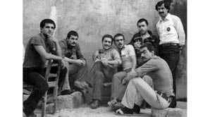
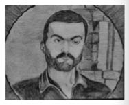
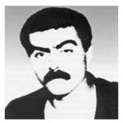

“Özgüç’ü Çıkardık Mezardan. Bayılmışım, Kardeşimi Çıkardığımız
Mezara Düşmüşüm.”
Sabriye Tuncay31
Ailemden 12 Eylül döneminde içeri alınan olmadı. Çünkü iki erkek kardeşim Özgüç ve Uğur Tuncay daha önce alınmıştı. Küçük kardeşim bir tarama sebebiyle suçlanmıştı, onun mahkemesi sürüyordu zaten. Büyük kardeşim Özgüç Tuncay da bir bahaneyle içeriye alınmıştı ama hakkında hiç mahkeme açılmadı çünkü somut bir suç yoktu. Birisinin ölümüyle ilgili alınmıştı ama o olayın olduğu tarihte Özgüç, Ankara’da benim yanımdaydı, olayla ilişkisi yoktu. 1978’in sonlarında olan bir olay bu. Bunu kendileri de bildikleri için 4-5 ay bir soruşturma yapılmadı, dava da açılmadı, 4-5 ayın sonunda 1979’da zaten cezaevinden kaçtılar. Bir müddet Artvin’de kaldıktan sonra Fatsa’ya geçtiler, orada 12 Eylül 1980 darbesi olduktan sonra da sürekli izlendi ve 4 Kasım akşamında Silahlı Kuvvetler tarafından öldürüldü.
Küçük kardeşim 9 ay cezaevinde kaldıktan sonra tahliye edildi ama mahkemesi devam etti. Çok fazla ceza almadı, yanlış hatırlamıyorsam, 4.5 yıl bir ceza almıştı, içeride yattığı süre de göz önünde bulundurulduğunda kalan 3 ayını yattı, çıktı. Başka da bir ceza almadı. Ama tabii bu içeriye alınma dönemlerinde, özellikle küçük yerlerdeki baskıdan dolayı, çok fazla işkence görmüştü. O karda kışta Artvin’in dağlarında bir askeri jipe bağlamışlar ve dolaştırmışlar ağabeyin nerede diye. Özgüç’ü bu şekilde bulmaya çalışmışlar 12 Eylül’den önce. Ama 12 Eylül tarihtir sadece. Öncesinde de o sistem vardı, 12 Eylül’den sonra da bunu yasallaştırdıkları için daha büyük boyutlara getirdiler, yoksa o baskılar Artvin’de ve Fatsa’da hep olmuştu. Nokta Operasyonu, Fatsa’da 12 Eylül öncesi yapılmıştı. Birçok insan içeriye alındı, öldürüldü. Yanlışlıkla; Özgüç’ün Nokta Opersayonu’nda öldüğünü söylediler, hayır, Nokta Operasyonu döneminde Özgüç eylemlerine devam etti Fatsa’da. Hatta Fikri Sönmez için çok eylem yapmıştı içeriye alındıktan sonra.

Özgüç Tuncay (oturanlar sağ başta) Artvin Cezaevi’nde
Özgüç, Fatsa’da halkla birlikte yapılan çalışmalara da katılmıştı. Önce zaten Çamaş bölgesine gitmişti ama yavaş yavaş tanındıkça Fatsa’da da eylemlerde bulunmuştu. Kör Namık adıyla tanınıyordu. Askerlerin resmi anlatımına göre, her türlü eylemde Kör Namık adı geçiyor, hatta askerler başarısız olarak döndükleri zaman ne yapalım Kör Namık’tı çatışan, o vardı, silahlarımızı elimizden aldı diye anlatıyorlar. Biz Özgüç’ü almaya gittiğimizde jandarma yüzbaşısının anlattığı şeyler bunlar. İlk önce zaten fındık mitinglerinde ön plana çıkıyor.
12 Eylül’den sonra zaman zaman eylemlere katıldıktan sonra araziye çıkıyorlar tabii. Çünkü sürekli baskı var. Orası gizlenme noktası. Ben illegal yollardan haber alıyordum. 4 Kasım 1980’de dağda sığınakta öldürüldü. Haberi gazeteden aldık. Yalnız kimlik karışması vardı. MLSP’nin lideri Kerim Mete Sonatılgan olarak verildi gazetelerde. Biz de öyle bilgilendik ama bir hafta veya 8-9 gün sonraydı, Özgüç’ün Artvin’den mücadele arkadaşı Necmi Karagülle dedi ki “Abla ölen her ne kadar basında Kerim Mete Sonatılgan olarak çıksa da ölen Özgüç, vuruldu”. Benim öyle haberim oldu ama resmi olarak açıklanmadığı için herhangi bir girişimde bulunamadım ve ben 3 ay bunu herkesten gizlemek zorunda kaldım. Aileden, çevreden. Anneme, babama dahi söylemedim. Kardeşim Uğur o zaman Ankara’da Merkez Cezaevi’nde, gidiyorum, orada ona da söyleyemedim.
Derken Artvin’den Üsteğmen Ferit Ildırar geliyor Fatsa’ya, resimleri gösteriyorlar, diyor ki bu Özgüç Tuncay. Arananların başında var ama kimse Özgüç Tuncay olarak tanımıyor Fatsa’da. Ondan sonra tabii resmi kanalla savcılığa bildiriliyor, savcılık babamı çağırıyor ve söylüyor. Babam bunun arkasından hastalanıyor, beyin kanaması geçiriyor ve bitkisel yaşama giriyor. Bana haber verdiler, tam da sömestır tatiline yakındı. Gittim, iki gün sonra babamı kaybettik. Şubat’ın 2’sinde babam öldü, babamı mezara koyduktan 2 gün sonra da biz 4 kız kardeş Fatsa’ya gittik Özgüç’ü almaya. Kız kardeşim Emine’nin eşi Orhan da bizimle geldi.
Gittiğimiz gece Ünye’de kaldık, ertesi gün Fatsa’ya geçtik. Bizi karşılayan genç bir adam dedi ki “Eğer burada (Özgüç hakkında) anlatılanlara inanırsanız Fatsalılara çok büyük haksızlık etmiş olursunuz!”. Sonradan öğrendiğime göre savcı yardımcısıymış. Gerçekten de savcılık da jandarma da çok kötü şeyler anlattılar bize. Jandarmanın kapısından girerken askerin birisi dedi ki “Üzüldünüz mü öldüğüne?” Ben hayır dedim üzülmedim ama yüzümdeki hal neyse çocuk dondu. Oradaki diğer askerler bu askere dediler ki sen salak mısın, böyle bir soru soruyorsun. Yüzbaşının yanına gittik, o anlattı. İşte şöyle olmuş, böyle yapmış, askerlerin tüfeklerini almış ellerinden. Kardeşlerim dayanamıyor, karşı çıkıyorlar, bırakın dedim anlatsın adam, içini döksün. Birçok şeyi söyledi, “Bitti mi” dedim, yüzbaşı “Bitti” dedi. Ben “burada insanlarla karşılaşacağımı zannetmiştim” dedim. Ne demek dedi. İnsan dedim, düşmanını bile öldürdükten sonra arkasından kötü konuşmaz, benim bildiğim insan böyledir dedim. Haklısınız dedi. Dedim ki bu çocuk, 4 kız kardeşin arkasından gelmiş bir erkek kardeş. Toplumu bilirsiniz dedim, nasıl bakılır erkeklere. Biz yoksul bir aile değildik dedim, bu çocuk niye sevgilileriyle kol kola el ele gezeceği çağda böyle şeylere kalkışmış acaba. Her şey düzgün mü bu ülkede? Neden bu böyle olmuş? Bu sefer “Evet fikirlerini ben de kabul ediyorum ama işte askerle çatışmışlar” dedi. Dedim ki eğer bunu yapabilmişse senin askerlerini bir başına alt edebilmişse ben üzülmeyeceğim, gerçekten, saygı duyuyorum. Ay neler anlatıyor, 25 kuruş atıyormuş onu vuruyormuş, artık kulaktan kulağa efsaneleştirmişler kendi aralarında. Çok büyütmüşsünüz dedim, o kadar değildir, çok abartmışsınız. Şimdi iyice efsaneleşti ama daha sağken efsaneleşmişti. Herkes öyle anlatıyor. Herkesin yardımına koştuğunu, asla hiçbir şeyden korkmadığını anlatıyor karşılaştığımız herkes.
Cenazesini almaya gittik, bizi çok uğraştırdılar. İşte oradan yüzbaşı bizi birlik içindeki Et Balık Kurumu’nun içinde bir başka yüzbaşıya gönderdi. O arada biz ikiye ayrıldık. Bir kısmımız cenaze işleriyle uğraşmak üzere şehirde kaldı, bir kısmımız da yüzbaşıyla görüşmeye gittik. Bizi odasına aldı, sohbet ettik orada. Askerlerini göndertti, resimleri, fotoğrafları getirtti, teşhis ettik orada. Onun adını söyleyemeyeceğim, Erzincan’dan gelmişti. Şimdi kim bilir nerededir, belki de emekli olmuştur ama ben orada dünya güzeli bir insanla karşılaştım. Bize çok iyi davrandı, hatta arabanız var mı diye sordu, yok dedik. Kendi makam arabasını bize tahsis etmek istedi, hayır dedim bunu kabul edemem. Çünkü biz farklı bir şeyin içindeyiz burada, size zarar vermeyelim. Çok ısrar ettiyse de kabul etmedik onu. Şimdi ben onun için bütün askerleri suçlayamıyorum. Aldık evraklarımızı, geldik, artık hava da kararmak üzere. Mezarlığa gittik. Mezara defnetmişlerdi. Kendisini gömen kişiler bir yer gösterdiler, buraya gömüldü dediler, o mezarı açtık. Sadece Özgüç’ü koymuşlar mezara. Diğerlerini dağda, vurdukları yerde gömmüşler çünkü. Savcı dedi ki siz çok şanslısınız, ormanda o kadar bilinmeyen mezar var ki. Açmaya başladılar mezarı. Biz mezara gittiğimizde orada bir tane adam vardı mezarın karşısında, mezar kazılmaya başlandı, insanlar da çoğalmaya başladılar. Biz mezarı açmadan önce bütün mezarlığın etrafı sarıldı insanlarla. Çok derin kazmışlar, açtık, çıktı. Hiç bozulmamış 3 ayda. Kefene sarmamışlar. Sadece altında bir tane külot vardı. Gömen çocuklar, askerler kazdılar mezarı. Özgüç’ü hiç bozulmamış bir şekilde görünce feryat etmeye başladılar. Bu şehitmiş, bize böyle gömdürdüler diye bağrışmaya başladılar. (ağlayarak anlatıyor) Ve ben o üzüntümün içinde o çocukları teselli etmeye çalıştım, “Yavrum killi toprak onu sardığı için bozulmamış, şehitlikle ilgisi yok, sizin bir suçunuz yok, öyle bile olsa, siz de ersiniz”. Savcı dedi ki siz ne büyük bir insansınız, yani üzüntünün içinde bile o insanları teselli etmeye çalışıyorsunuz. Dedim ben mecburum, Özgüç’ün ablasıyım. O da olsa aynı şeyi yapardı, çıkardık, o arada, mezarlığın etrafındaki insanlara dağılmaları için anons ettiler. Mermiler silahların namlusuna sürüldü, dağılmazsanız ateş edeceğiz dediler. Halktan insanlar, kim gelir mezara başka. İşte o gözleyen, mezarın başındaki kişi haber vermiş mezara geldiler diye. Komutana dedim ki komutanım sakın öyle bir şey yapmayın, bu insanlar dağılmaz buradan, sakın siz bir şey yapmayın. Her türlü sorumluluğu alıyorum, bir taşkınlık yaparlarsa ben sorumluyum ama lütfen bir şey yapmayın dedim. Kardeşimi mezardan çıkardık, ben bayılmışım, kardeşimi çıkardığımız mezara düşmüşüm, hiç haberim yok.
Neyse çıkardık, koyduk tabuta, biz Artvin’e kadar da tabutta öyle açık götürdük. Bir adam, ben götüreceğim Özgüç’ü diye ısrar etti, başkasına bırakmadı. Biz de Samsun’dan gelen arabaya binip arkalarından gittik. Aynı saaatte indik zaten. O bize durmadan konuşan yüzbaşı Ordu’ya kadar uğurladı Özgüç’ü. Zaten her ilin hududunda jandarma teslim etti vardığımız hududun jandarmasına. O şekilde geldik. Biz haber verecekmişiz jandarmaya, vermedik, öyle bir şeye ihtiyaç duymadım çünkü her ilin jandarması zaten aldı, sağ olsunlar köyde de herkes ilgi gösterdi.
Köydeki insanlardan herhangi bir tepki görmedik. Herkes katıldı cenazeye. Hatta giderken, bizde kadınlar gitmez ya cenazeye dedim ki ben gideceğim, kardeşimi mezara ben götürüceğim. Öyle deyince bütün kadınlar da geldi. Orada saygı duruşumuzu da yaptık, herhangi bir şey olmadı. Eve geldik, jandarma geldi. Ferit Ildırar işte, onun her yerde adını söylüyorum, çünkü o gerçekten insan olamaz. Artvin’de herkes de bunu söylüyor. Orada dünya güzeli insanlarla da karşılaştım, oradaki yüzbaşı da önce anlattı, konuştu ama ondan sonra özür diledi. Ama bu Ferit yüzbaşı insan olamaz. İşte Uğur’u da dağlarda arabaya bağlayıp dolaştıran odur. Her gittiğimde bana haber gönderirdi, gelsin tutuklayacağım, gelsin içeri alacağım diye. Belki yüzbaşı olmuş, belki asker olmuş ama insan değildi. Hanbaşı’na gelmiş, orada Orhan’a hakaret etmiş. Niye haber vermemişiz ona. Ben gittim, dedim ki bütün bu işlerin sorumlusu benim, bir sıkıntın varsa benimle hallet. Ben sana niye haber vereceğim, sen kimsin dedim ya. Bu zaten orada savcılık izniyle alındı ve her ilin girişinde de devir teslim yapıldı, ben niye sana haber vereyim. Senin haberin olmadı mı dedim. Sen dedi çok diksin. Evet dedim ben dikim, öyle gömdük Artvin’de.
Tabii o arada annemi mezarlığa çıkardık, getirdik ama ben anneme bu Özgüç değil, Kerim Mete Sonatılgan, ağlama dedim. Bu olay kapansın, Özgüç rahat hareket etsin diye getirdik dedik. Sağ bildi annem. Çünkü çok panikledi. Babamı daha 2 gün önce gömmüşüz. Sonra tabii anlattık anneme. Hep bu acıları yaşadık ama ülkem acı içindeydi. Bu sadece bize özgü bir şey değildi. Biz şanslıydık, çocuğumuzu bulup getirmiştik, mezarını bulamayan birçok insan vardı ülkede.
Annem çok güçlü bir kadın. O olayların içinde her zaman dik durmayı, her zaman insanları sevmeyi başarmış bir insan. Asla benim oğlum nerede demedi, onun arkadaşlarını da çok sevdi, üzüntüsünü hep kendi kendisiyle paylaştı, kendi çocuklarım etkilenmesin diye üzüntüsünü bizimle bile paylaşmadı. Yalnız kaldığı zaman ağladı. Tepkisini öyle verdi. Elbette ki eşini de kaybetmişti ama oğlu için daha çok üzülmüştü, daha çok gözyaşı döktü. Hatta yeğenim o zaman daha çok küçüktü, 6 yaşında bile değildi. Bir gün “Anneanne, dayılara mı ağlanır, dedelere ağlanmaz mı?” diye bir soru sormuştu. Bu beni son derece etkilemişti. Demek ki annem oğlunu daha çok arıyordu, onu daha çok özlüyordu ki çocuk bunu hissettmişti. O günleri yaşamak istemiyorum aslında ama yaşandı. Bizler bu ülkenin önde giden insanlarıyız, bizler aklı başında insanlarız ve bu düzen aklı başında olan insanları her zaman baskı altına almak istemiştir, her zaman ezmiştir. Onun için de bunlar bizi bekleyen sondu, yaşadık. Her şeye rağmen ayakta durmayı başardık. Ben zaman zaman arkadaşlarıma da söylerim: “Bizi oligarşi dize getiremedi. Sen beni hiç dize getiremezsin” diye hayatımda en çok kullandığım sözlerden birisidir. Bir gün aramaya geliyorlar evi, işte o Ferit denen adam anneme diyor ki “Bu boklu karnında nasıl taşıdın onu?” Annem diyor ki sen başka bir yerden mi çıktın, sen de aynı yerden çıktın. Annem öyle birisiydi. Onu kimse hiçbir zaman ezememiştir. Ezdiklerini sanmışlardır ama asla, asla eğilmemiştir kimsenin önünde. Onun için de annemle, ailemle gurur duyuyorum.
Dolayısıyla 12 Eylül sabahı hiçbir şey değişmedi bizim için. Yani biz çocukluğumuzdan beri bu işin içindeydik. Sonradan olan bir şey değil. Biz Nâzım Hikmet’in şiirleriyle büyüdük. Babam bize ninni olarak onları okurdu. Öyle bir insandı, hayata öyle bakardı, biz öyle büyüdük, onun için değişen bir şey olmadı. Benim ailem çekirdek aileydi. Bizde hala, büyükanne, büyükbaba, kimse yoktu. Anne, baba ve çocuklar. Oruçlu köyünde yaşadık. Son derece modern bir ailem vardı. Gerçekten biz hiçbir şekilde baskı görmedik büyürken. 6 kardeştik, şu anda 5 kardeş kaldık tabii. Benim arkamdan bir kız kardeşim ve arkadan Özgüç doğdu. Annem Özgüç’e hamileyken bir gün babam pür neşe kalktı sabah uykusundan ki babamın öyle bir saplantısı yoktu illa erkek çocuğum olsun diye. Annemde vardı daha çok. Babam, gözlerinin içi gülerdi güldüğü zaman, anneme dedi ki “Hanım oğlun olacakmış”. Hayırdır dedi annem, nereden anladın. Dün akşam dedi rüyama bir dede girdi ve dedi ki “Oğlun olacak, adını Özgüç koy. Çok meşhur olacak ama çok uzun yaşamayacak.” Ve biz onun için bekliyorduk yani. 1 Haziran günü doğdu Özgüç, adını Özgüç koyduk tabii. Özellikle benim için çok büyük bir şeydi. Ben çok sevdim, sevindim, kardeşim doğdu diye. Hatta o kadar yoğundu ki duygularım, bunu ilk kez anlatıyorum, Uğur doğduğu zaman üzülmüştüm, Özgüç’ün sevgisi azalacak diye. Ben de o zaman çocuğum, gerçekten Özgüç’ün sevgisi paylaşılacak diye üzülmüştüm. İşte 6 yaşına kadar çok sağlıklı bir çocuktu, 6 yaşında bir kaza geçirdi, gözünün birini kaybetti. O beni hayatımda en derinden yaralayan şey olmuştu.
Çok güzel günlerimizdi o günler, çok mutluyduk, huzurluyduk. Ondan sonra da büyüdük, herkes gibi. Ben zaten Ankara’daydım ama benim ille bir yere bağımlı olmak gibi bir saplantım yoktur zaten. Bulunduğum yere uyum sağlarım, insanlarla iyi ilişkiler kurarım, onun için köyü çok fazla arıyorum diyemem.
Psikolojik Etkiler...
Özgüç’ün ölümü psikolojik olarak etkiledi beni. Bir yıl sürekli olarak psikolojik destek aldım. Atalay Yörükoğlu benim aynı zamanda da hocamdı. Bana çok büyük yardımları oldu. O olmasaydı ben çok kötüydüm. Ben 1 ay ne ağlayabildim, ne yemek yiyebildim, ne uyuyabildim, ne başka bir şey yapabildim. Robot gibiydim. Ve ben o yıl sadece uyumak için eve geldim, o kadar çok çalıştım ki, okulda 12 tane halkoyunları ekibi hazırladım o sene.
Yıllarca gülemedim bile. Bir düğüne gitmedim. Her zaman derdim ki bütün ailemi çok severim ama, hayatımda en iyi anlaştığım kişi babamdı, babama ve Özgüç’e bir şey olursa ben yaşayamam derdim. Ben ikisini birlikte kaybettim. Ama hayat devam ediyordu. Hiç kimse diğeri için üzülmez, ben onu anladım hayatta. Güçlü olduğun sürece çevrende insanlar vardır. Güçsüz olduğun zaman hiç kimse sana yardımcı olmuyor. Onun için güçlü olmak zorundaydım ve de yardım almak zorundaydım, aldım, hep dik durdum, gülmedim ama hep dik durdum. O günleri atlattık, onları öldü diye kabul etmiyorum, her zaman hep benimle yaşıyorlar. Her gece gökyüzüne yıldızlara bakıyorum. Çünkü yaşıyoruz.
Hiç Unutamadığım Bir An...
Özgüç’ün öldüğü gece, 4 Kasım’da bir rüya görmüştüm. Benim öldüğünden henüz haberim yok. Bu rüyayı hiç unutamıyorum: 4 Kasım akşamı bir adliye sarayı. Çocuklar hep oradalar, tanıdı-

Tayfun Gedik’in çizgileriyle
Özgüç Tuncay
ğım çocuklar, Özgüç’ün arkadaşları, tutuklanmışlar orada. Özgüç’ü göremedim. Adnan var, Adnan Keskin “Özgüç nerede Adnan?” dedim. Buralardaydı abla şimdi gelir dedi. Arkamdan bir kapı açıldı, Özgüç o kadar canlı ki güya, gömlek giyiyor sırtına, bir kolunu sokmuş, diğer kolunu da sokarken kapıdan çıktı, yanında da bir kız. Kızın üstünde sarı

Özgüç Tuncay
şile bezinden bir elbise, üstünde siyah çiçekleri var. Sarıldık. En son yanında olan bir kız arkadaşı. Yıllar sonra bir yerde karşılaştım onunla, siz şu musunuz dedim. Hayret etti kız, o da beni tanımıyor. Rüyada gördüğüm kız. O akşam öldürmüşler, o gece bu rüyayı gördüm. Ve hiç unutamadım. Demek ki hissediyor insan.
Keşke böyle yapmasaydı, bunları hiç yaşamazdık diye bir şey düşünmedim hiç. Biz birtakım değerlerle büyüdük. Onun için ben her zaman gurur duydum, her yerde de bunu ifade ediyorum, kardeşimle gurur duyuyorum. Onun ablası olmaktan gurur duyuyorum. Benim hayatta en nefret ettiğim şey birisinin yakını olmak yani öyle tanınmak ama Özgüç’ün ablası olmaktan, öyle lanse edilmekten, öyle anons edilmekten hep gurur duydum.
Toplumun Tepkileri
Ben kendi çevremde toplumdan bir tepki hissetmedim açıkçası. Küçük kesimlerde hani tepki olarak değil de bazı davranışlar insanlar tarafından yapılıyor. Daha sonra Artvin’e gidip geldikçe Uğur’un eşini, en yakın akrabalarımızdan birisi “Uğur’u yakalamak istiyorsanız karısı burada onu yakalayın söyletin” diye ihbar etmişti. Annem ondan çok rahatsız olmuştu mesela.
Darbenin Götürdükleri
Darbe benden kardeşimle babamı aldı. Onları geri istiyorum. Mahkemede de söyledim, “Geri istiyorum kardeşimle babamı, gücünüz yetiyorsa verin!” diye. Onun dışında maddi olarak sıkıntılar çektik. Yaşadık ama benden kişilik olarak bir şey almadı. Daha çok güçlendim, insanlara karşı sevgim arttı. Her ne kadar onlar baskı yapsalar da ben insanları seviyorum, sadece üzülüyorum. Bu kendini bilmeyen insanlar beni üzüyor. Bir insan olarak yakıştıramıyorum onlara. Bir insanın insanca davranması gerekiyor. Bunları göremediğim zaman üzülüyorum. Onun dışında darbe asla benden bir şey alamaz. Ben daha güçlü hissediyorum kendimi.
32 Yılı Değerlendirirsek...
Elbette ki her toplumda inişler çıkışlar oluyor. 1980’de devrimci güçleri balyoz gibi ezdiler. Ne yazık ki şu anda 30 yaşında olan çocuklar bile bunu bilmiyorlar. Ama ben umutsuz değilim. Yaşadıklarımızla kaldı gibi bir zihniyetim hiçbir zaman olmadı çünkü gençlerle bağlantımı hiç koparmadım. Evet şu anda belki sayıları az ama önemli olan sayının çokluğu değil, önemli olan bilinçtir benim için. Kafası çalışan 10 kişi, kafası çalışmayan binlerce kişiyi alt edebilir ve ben çevreme baktığım zaman böyle gençleri görüyorum. Onlar bizden bu konuda daha bilinçli, daha akıllı davranıyorlar. Onun için yaşadık geçti diye kabul etmiyorum. Çünkü ben şuna inanıyorum; devrimler çok kısa sürelere sığdırılan şeyler değildir, belli bir süreçtir. Bu süreç mutlaka yaşanır ve ölenlerin de boşuna öldüklerini düşünmüyorum. Çünkü onlar bu ülkenin mihenk taşlarıdır. Onların deneyimlerinden yararlanarak daha yeni eylemlere, yeni atılımlara mutlaka gidilecektir. Topluma yabancı hissettim mi kendimi? Topluma genel olarak yabancı hissetmiyorum ama belli topluluklarda olduğum zaman evet yabancı hissediyorum. Ama bütün toplum olarak düşünürsen hayır. Ben de gelişmelere ayak uyduruyorum, teknolojiye ayak uyduruyorum ama teknolojiyi kendi kafama göre kullandığım zaman kullanıyorum yoksa oturup da saatlerce hiç facebook’un başından kalkmayan birisyle kendimi aynı kefeye koyamıyorum. Evet yabancı hissediyorum öyle birisine. Bütün her şeyini modaya odaklayan birisinin yanında kendimi yabancı hissediyorum. Ama güzel giyinen kadını da erkeği de çok beğenirim. Uyumlu, güzel. Onun için çok fazla böyle toplumun dışında hissetmiyorum kendimi. Belli şeylerin dışında hissediyorum. Benim çocukluktan beri belli değerlerim var, yaşam tarzım bellidir. Bir başkasının davranışı beni asla ilgilendirmez, babamın meşhur bir sözü vardı, ben hayatım boyunca hep onu uyguladım “Kızım başkasının yaptığı şey sizi ilgilendirmesin, siz size yakışanı yapın” derdi. Benim hayat düsturum bu olmuştur. Herkes dilediği gibi yaşayabilir, dilediği gibi gezer, eğlenir ama benim doğrularım vardır. Ona uygun şekilde yaşadım, toplum içinde de gerçekten öyle itilmedim hiç. Belki onun etkisidir. Kendimi çok soyutlanmış olarak hiç görmedim. Bütün bu şeylerde, olaylarda bile beni asla kimse ötelememiştir. Ben de insanları ötelemedim, hayatım boyunca hiç oruç tutmadım ama yönetici olduğum dönemde, her akşam iftar sofrası hazırlatırdım okulda. Arkadaşlar oruç tutuyorlardı, onlar çıkınca oruçlarını açsın, bir an önce derslerine gitsin diye. İnancının, saygısının ötesinde de dersler daha önemliydi. Kendi hallerine bıraksam 1 ders saati geçiyordu ama ben hazırladığım zaman bir teneffüste bitiyordu. Niye oruç tutuyor diye de hiçbir zaman ters bakmadım, onları ötelemedim, onun için ben de hiç ötelenmedim: Her zaman girdiğim her toplumda ayakta karşılandım.
Sol Ne Yapmalı?
Eğer 1970’lerde, 1980’lerde yapılan şeyler bugün harfiyen yapılmaya çalışılıyorsa bu benim için yanlış ama o deneyimlerden etkilenip günümüze bunu uyduruyorlarsa ona diyeceğim hiçbir şey yok. Hatta bir toplantıda ne yapmamız gerekli diye sordu bir genç kız, dedim ki kızım, biz onu bilseydik zaten bir şeyler yapardık. Siz kendiniz düşüneceksiniz ne yapmanız gerekiyor diye. Ben öyle bakıyorum.
Bugün toplumumuzda direnme kültürü diye bir kültür oluştu. İnsanların canı yandıkça, yakanlara karşı başkaldırı başladı. Eğer bu bugün görülüyorsa işte 1980 öncesinin devamıdır bu. Yoksa hiçbir şey durup dururken olmuyor. Bugün Hopa’da Metin Lokumcu’yu öldüren zihniyete karşı Türkiye’nin her yerinde eylem yapılıyorsa işte bu 1980 öncesinden gelen bir kültürdür.
Benim çok hoşuma giden bir şey var. Tortum’da, çarşaflı kadınların HES’lere karşı mücadele vermesi. Kim düşünürdü orada öyle bir eylemin olabileceğini ve insanların buna destek vereceğini. İşte bunlar hep geçmişin ürünleri. Her ne kadar baskı altında tutmaya da çalışsalar, her ne kadar yok da saysalar, geçmişte bu ülkede birçok güzel şey yapıldı ve insanların önünü de kapatsan hiçbir şey gizlenmiyor. Televizyonda vermeseniz de birisinden duyuyor, öbürü ona aktarıyor, insanlar geçmişte bu ülkede ne olduğunu öğreniyorlar ve geçmişte bunlar yapılmışsa bugün daha da ileriye götürmemiz gerekir diye HES’lere de karşı çıkıyorlar, dereleri yok edenlere de karşı çıkıyorlar, her şeye karşı çıkıyorlar. Bugün belki çok azınlıkta kalıyor çünkü şehirler daha büyüdü. Köylerde, kırsal kesimdeki insanlar daha az, onun için direnenlerin daha az olduğunu zannediyoruz ama metropollerde de onları destekleyen birçok eylem yapılıyor. Bu güzel bir gelişme. Umuyorum yakında uyuyanlar da uyanacaklar ve kitlesel eylemlere dönüşecek. O zaman bizi bu kadar kolay sömüremeyeceklerini, bu kadar kolay yolunacak kaz olarak göremeyecekleri ortaya çıkacak, bunu ben umuyorum. Sadece ummakla da değil, olacak bu, başka yolu yok.
12 Eylül Davası
Ben onun göstermelik bir dava olduğunu biliyorum. Sadece 28 Şubat’a kılıf uydurmak için, bu hazırlandı. Ben konuşmalarımda da, mahkemede de, röportajlarımda da bunu söyledim. Buradan bir şey çıkacağını sanmıyorum. Çünkü 12 Eylül’ün meyveleri 12 Eylül’den nasıl hesap soracaklar? Bugünkü iktidar kimin uzantısıdır? Ama şunun için davaya da müdahil oldum, “Biz de varız. Biz bu acıları yaşadık, herkes duysun” diye müdahil oldum ve her fırsatta da bunu açıklıyorum. Ama süreç içinde şunu gördüm ki, ben iddianameyi de okudum, iddianame tamamen 12 Eylülcüleri aklamak için yazılmış. Yani başka bir şey yok ama süreç işlerken daha farklı yönlere kaymaya başladı. İnsanlar birbirlerini tanıdılar en azından. Ben 11 Mayıs’taki mahkemede Memur-Sen’in başkanıyla tanıştım. Geldi elimi sıktı ve görüşelim dedi. Tamamen uzağımda bir kuruluş ama o insanlarla da tanışıyorsun ve mahkemenin yargıcı “Ben bu mahkemede çok şeyler öğreneceğim, öğreniyorum” dedi. Onun için “Bunu böyle yaptılar da kenara çekilelim” durumuna da karşıyım. Direneceksek orada da direneceksin, sesini duyurmaya çalışacaksın. Onun için ondan bir şey çıkacağına ben inanmıyorum çünkü görüyoruz, her gün yargıçları değiştiriyorlar. Belki de o yargıda da değiştirecekler, onu bilemiyorum ama her yerden raporlar istemişler, onlar geliyor. En azından gazetelerde, medyada bunlar gündeme gelince, insanlar da bunu duyuyorlar, böyle şeyler yaşanmış diyorlar. Ama sağlıklı bir şey çıkacağına da inanmıyorum. Ben mahkemede de söyledim. Benim Kenan Evren’le veya Tahsin Şahinkaya’yla bir hesabım yok, benim hesabım düzenle çünkü düzen her zaman kendisine hizmet edecek birilerini bulur, onları kullanır. Sistem yargılanırsa o zaman bir yerlere varılır ve gelişmeleri de öyle görmeye başladım ben. Çok duyarsız değiller, her yerden rapor istemişler mesela, YÖK’ten istemişler o dönemde kıyılan öğretim görevlilerinin listesini. MİT’ten istenmiş ve şimdi birçok şey açığa çıkıyor. Her şeye tü kaka demek de istemiyorum ben. Öyle bir zihniyetin çok fazla sağlıklı yargılayacağını düşünemiyorum ama en azından birtakım şeylerin gün yüzüne çıkması da güzel bir şey.
31 1951 doğumlu. Emekli öğretmen. Kardeşi Özgüç Tuncay, sıkıyönetim askerleri tarafından öldürüldüğünde 23 yaşındaydı.